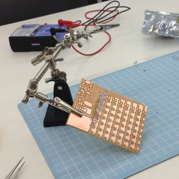
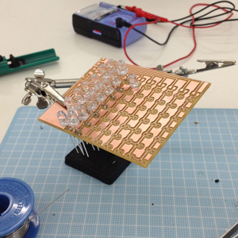
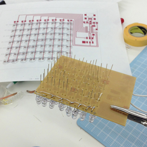
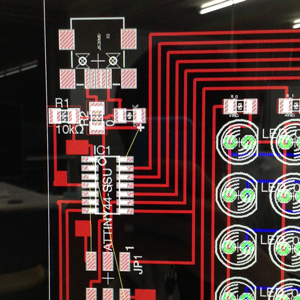
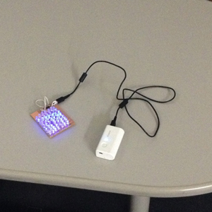

Kousuke Kikuchi
Fab Academy Participant and PhD Candidate
Week 13: Output Devices
Summary: 8x7 Charlieplexing LED Array
All the files can be found at my GitHub
Some of the LED could not blink.
Introduction
When I saw this week's assignment, I came to my mind regarding two things: Kinetic Architecture and LED Array.
Okayama LRT Competition designed by sharisharishari
Kinetic Architecture is the notion that architecture can move based on sensoring and actuating system. My idea to this was to assemble Origami such as Miura Map Fold and Diamond Cut [1] to determine the shape of architecture. I got Electroactive polymers for this purpose. But after I read the data sheet, I found it would be failed because this actuator could contract only 5% of its length at most.
Next, Charlieplexing LED Cube
I was completely fascinated with LED Cube. But, since I did not have enough skill of Charlieplexing, firstly, I learned the basic of it. Then, made LED matrix as big as possible with ATtiny84.
Methods
Checking the mechanism of Charlieplexing
One pin outputs HIGH, the other pin outputs LOW. Current flows from HIGH to LOW, so the LED with the same direction with the current was able to blink. Based on this method, we can decrease the number of pins for LEDs.



Shinjuku. from my Lab. for change of pace....

I found GND pin was not connected.

I found the blinking is quite different from the tutorial. Since in Neil's example, the pins were connected to ROWs, on the other hand, mines were connected to LINEs. So, I changed function named flush into
void flash(uint8_t to, uint8_t from, uint8_t delay) And, it worked. But the problem is some LED did not blink at all, and other blink even though the program did not instruct for it to blink.
Problems for final project
My first idea is to make robot which can notify us confortable area in a room based on a number of sensor nodes. However, location detection was quite difficult for the robot.
The one of the other idea was to make Infrared LED Array to feel heat spot of Location Based Social Networks, not visualize it, as my profession is strongly related with this study. But, this week's assingment was enough for me to be disappointed with my idea. Firstly, soldering of all-well-ordered LEDs is quite difficult. I have tried, but mine was very rough. Secondly, the controll and schematics of LEDs is enough difficult to make errors at assembling.
Kinetic Architecture was fascinating to me. But the shape of the architecture must be determined by environment. I have no idea about evaluation and algorithm of kinetic architecture.
[1] Jun Miura, Origami Research Note (2012.7.24) retrieved from http://mitani.cs.tsukuba.ac.jp/origami/ at 2013.4.24